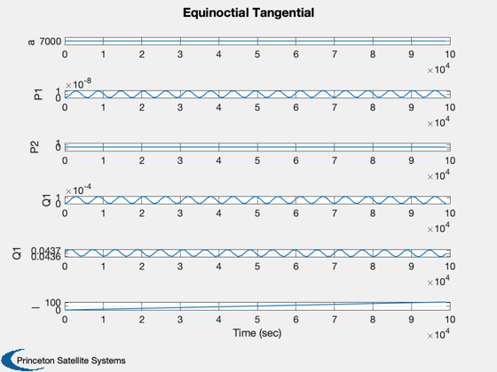
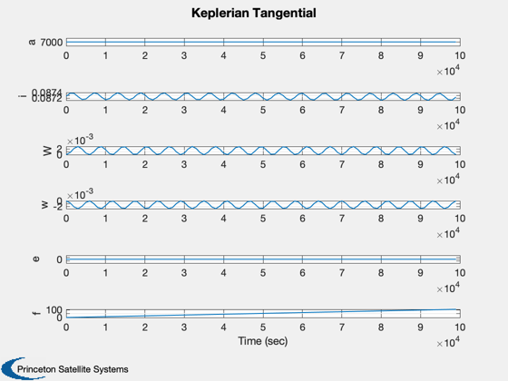
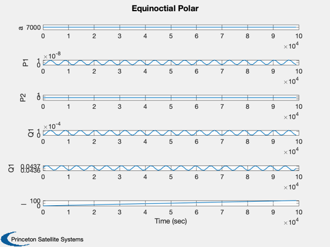
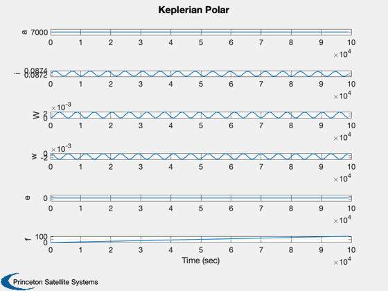

Simulate an orbit using the variational equations.
Since version 1.
------------------------------------------------------------------------
See also Plot2D, RK4, El2Eq
------------------------------------------------------------------------
Contents
Initial elements
a = 7000;
i = 5*pi/180;
W = 0;
w = 0;
e = 0.001;
M = 0;
el = [a,i,W,w,e,M]
eq = El2Eq( el )
aT = [0;0;0.000001];
nSim = 100;
xQT = [eq', zeros(6,nSim-1)];
xQP = [eq', zeros(6,nSim-1)];
xLT = [el', zeros(6,nSim-1)];
xLP = [el', zeros(6,nSim-1)];
dT = 1000;
for k = 2:nSim
xQT(:,k) = RK4( 'FVarEq', xQT(:,k-1), dT, 0, 'eqt', aT );
xQP(:,k) = RK4( 'FVarEq', xQP(:,k-1), dT, 0, 'eqp', aT );
xLT(:,k) = RK4( 'FVarEq', xLT(:,k-1), dT, 0, 'elt', aT );
xLP(:,k) = RK4( 'FVarEq', xLT(:,k-1), dT, 0, 'elp', aT );
end
t = dT*(0:(nSim-1));
Plot2D( t, xQT,'Time (sec)',['a ';'P1';'P2';'Q1';'Q1';'l '],'Equinoctial Tangential')
Plot2D( t, xLT,'Time (sec)',['a';'i';'W';'w';'e';'f'], 'Keplerian Tangential')
Plot2D( t, xQP,'Time (sec)',['a ';'P1';'P2';'Q1';'Q1';'l '],'Equinoctial Polar')
Plot2D( t, xLP,'Time (sec)',['a';'i';'W';'w';'e';'f'], 'Keplerian Polar')
el =
7000 0.087266 0 0 0.001 0
eq =
7000 0 0.001 0 0.043661 0
   